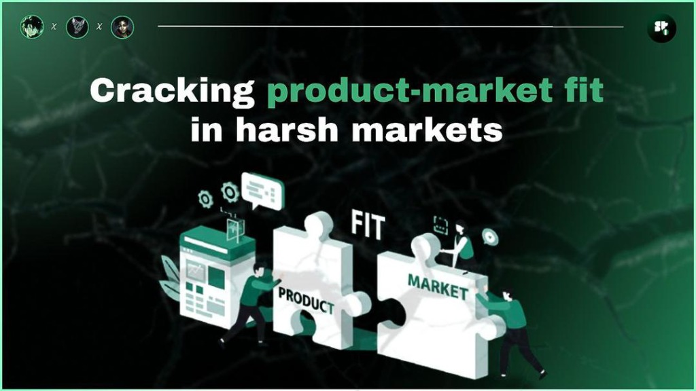

01
Research Paper
Cracking Product Market Fit in Harsh Markets
A Nigerian Solana startups case study showing how local teams are finding real product-market fit by solving everyday financial problems with fast, low-cost, user-friendly apps that hide blockchain complexity and build trust through clear utility and community-led growth.
View project →